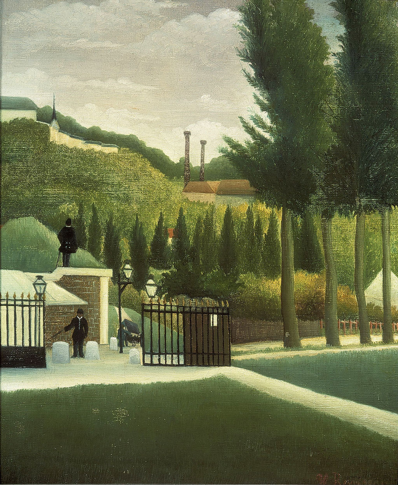

<head>
<meta charset="UTF-8" />
<meta name="keywords" content="drawing, painting" />
<meta name="description" content="drawings by Sunjy" />
<title>Sunjy</title>
<link rel="shortcut icon" type="image/x-icon" href="../../mImages/mCommon/favicon.ico" media="screen" />
<link rel="stylesheet" type="text/css" href="../../mCsses/mCommon/mCssA.css" />
<link rel="stylesheet" type="text/css" href="../../mCsses/mCommon/mCssB.css" />
<link rel="stylesheet" type="text/css" href="../../mCsses/mCommon/mCssC.css" />
<link rel="stylesheet" type="text/css" href="../../mCsses/mCommon/mCssD.css" />
<link rel="stylesheet" type="text/css" href="../../mCsses/mContent/mCssA.css" />
<link rel="stylesheet" type="text/css" href="../../mCsses/mContent/mCssB.css" />
<link rel="stylesheet" type="text/css" href="../../mCsses/mContent/mCssC.css" />
<link rel="stylesheet" type="text/css" href="../../mCsses/mContent/mCssD.css" />
</head>
<script type="text/javascript" src="../../mScripts/mContent/mContentAA.js" /></script>
<script type="text/javascript" src="../../mScripts/mContent/mContentAB.js" /></script>
<script type="text/javascript" src="../../mScripts/mContent/mContentAC.js" /></script>
<script type="text/javascript" src="../../mScripts/mContent/mContentAD.js" /></script>
<script type="text/javascript"></script> 
<script type="text/javascript">
document.write('<div class="mImgAbsolute"></div>');
/*
document.write('<p class="mFontSizeBColor" />From a white paper...</p>');
document.write('<table class="center"><tr><td>');
document.write('');
document.write('</td></tr></table>');
*/
</script>


<script type="text/javascript">
document.write('<p class="mFontSizeBColor" />The Customs Post </p>');
document.write('<p class="mFontSizeSColor" />“The Customs Post” by Henri Rousseau depicts the uniformed employees of the Paris Customs Office at an octroi or toll gate to enter Paris. The Paris Customs Office charged a tax, called l’octroi, on most goods brought into the city. A wall surrounded Paris, and everyone entered the city through one of the gates.<br><br>In the late 1800s, there were 66 octroi gates into the city at the time, and about 2,000 officers were employed, Henri Rousseau was one of them. The citizens of Paris strongly disliked the octroi, but the government needed the money. The old octroi buildings can still be seen in Paris today.<br></p>');
document.write('<table class="center" /><tr><td>');
document.write('<br>In the late 1800s, there were 66 octroi gates into the city at the time, and about 2,000 officers were employed, Henri Rousseau was one of them. The citizens of Paris strongly disliked the octroi, but the government needed the money. The old octroi buildings can still be seen in Paris today.<br>" />');
document.write('</td></tr></table>');
</script>


